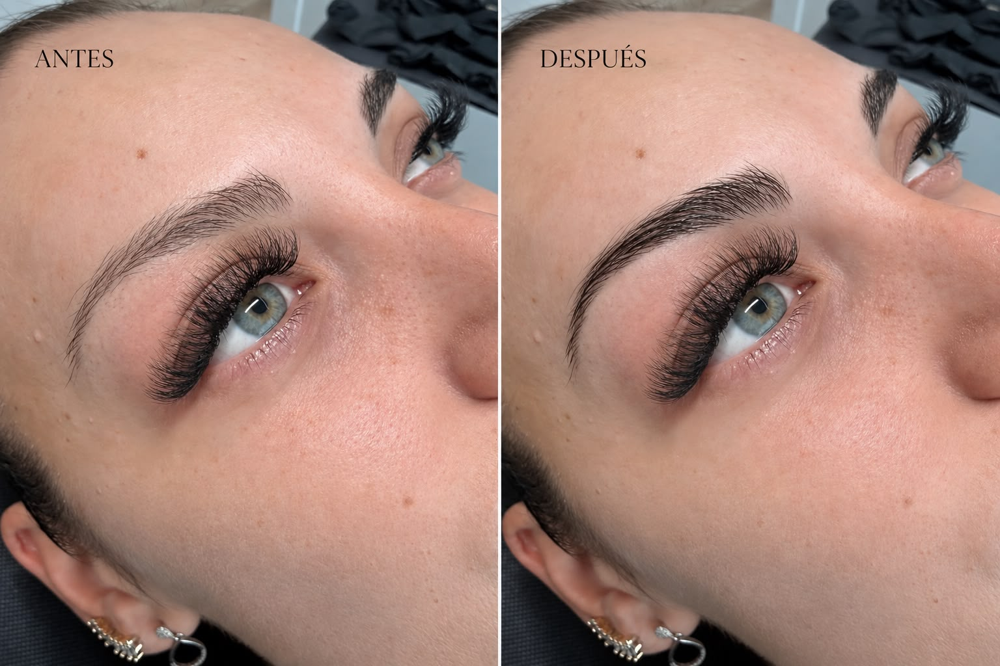

Diseño de mirada · Granollers
Laminado y diseño de cejas Nohuska Brow
Una experiencia no permanente que combina arquitectura de cejas, laminado y coloración cuando tu pelo natural permite conseguir la definición que buscas. Elegimos cada paso después de valorar tus facciones, la dirección del pelo y el acabado deseado.

Qué es Nohuska Brow
Tus cejas, mejor dirigidas y definidas.
No todas las cejas necesitan pigmento. Cuando existe pelo suficiente, podemos mejorar visualmente la forma mediante un diseño preciso, orientar el crecimiento con laminado y aportar definición con coloración. La combinación se decide en la valoración: no añadimos pasos que tu ceja no necesita.
El objetivo es que el resultado se integre con tus rasgos. Por eso observamos la densidad, los remolinos, la longitud, los huecos visibles y el mantenimiento que podrás realizar en casa. El tratamiento no crea pelo donde no existe ni tiene la duración de una micropigmentación.
Caso real · Granollers
Diseño que respeta el crecimiento y abre la mirada.Resultado realizado por Nohuska Beauty Lab
Otro caso real · Nohuska Brow
Antes y después de unas cejas naturales.

Qué puede incluir la experiencia
Laminado o micropigmentación.
El laminado de cejas trabaja la dirección del pelo que ya tienes y su efecto es temporal. La micropigmentación de cejas deposita pigmento para definir visualmente la forma o completar zonas con menor densidad.
Si no sabes qué opción elegir, envía una foto actual sin maquillaje y con luz natural. La confirmación definitiva se hace en persona, porque necesitamos observar el pelo y la piel directamente.
¿Para quién puede encajar?
- Cejas con pelo suficiente pero desordenado.
- Pelo que crece hacia abajo o en direcciones distintas.
- Quien desea más definición sin un procedimiento semipermanente.
- Quien quiere probar una forma antes de valorar micropigmentación.
Preguntas sobre Nohuska Brow
¿Qué incluye Nohuska Brow?
Incluye un estudio de la forma y el pelo natural y, según la valoración, diseño, laminado y coloración de cejas.
¿Es micropigmentación?
No. Es un tratamiento no permanente que trabaja el pelo existente. Si hay zonas sin densidad, valoramos por separado si conviene micropigmentación.
¿Dónde se realiza?
En Nohuska Beauty Lab, Avinguda Sant Esteve, 40, 08402 Granollers, con cita previa.
¿La valoración es gratuita?
Sí. Revisamos el pelo, la forma y el efecto que buscas antes de elegir la combinación de técnicas.
Más opciones para tus cejas
Encuentra la forma que mejor te sienta.
Valoración gratuita y personalizada en Granollers.